Datele și sistemul informațional aferent sănătății publice
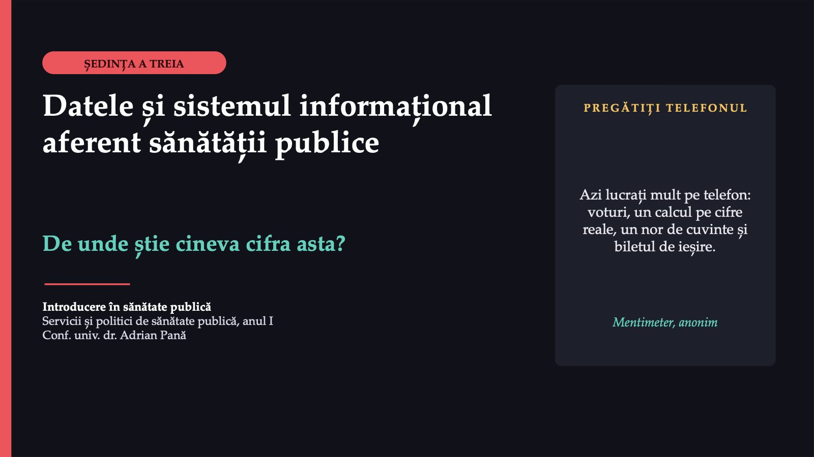
1 / 49Titlul de azi sună administrativ: date, sistem, informații. În spatele lui stă o întrebare foarte concretă, pe care v-o puteți pune oricând citiți o știre despre sănătate: de unde știe cineva cifra asta?
De unde știe cineva cifra asta?
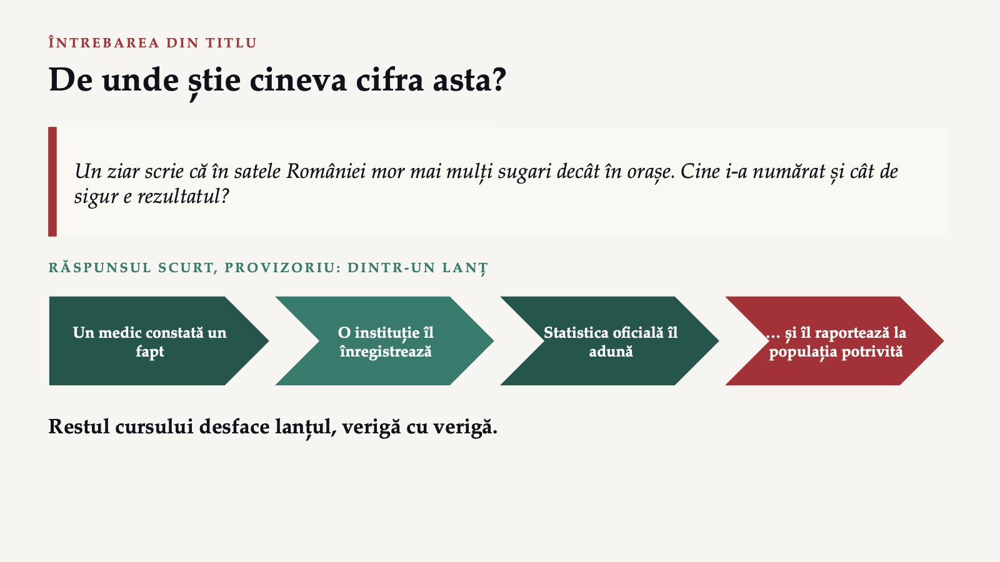
2 / 49Răspunsul scurt, provizoriu: dintr-un lanț de oameni, formulare și reguli. Pentru mortalitatea infantilă, Institutul Național de Statistică împarte copiii decedați înainte de un an la copiii născuți vii în același an.
Șase părți, jumătate din timp lucrați voi
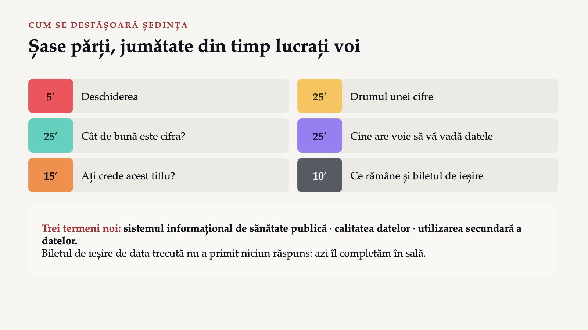
3 / 49Azi aveți trei termeni noi, fiecare spus și în cuvinte obișnuite. Jumătate din timp lucrați voi. Biletul de ieșire de data trecută nu a primit niciun răspuns, așa că azi îl completăm împreună, înainte să plecați.
O noapte de iarnă, într-o comună din nord-est
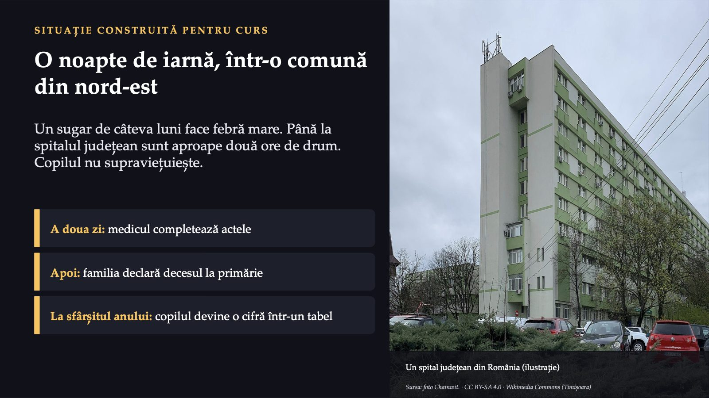
4 / 49Situația este construită pentru acest curs și nu descrie persoane reale. Urmăriți ce se întâmplă cu acest deces după ce familia pleacă de la primărie.
6,8
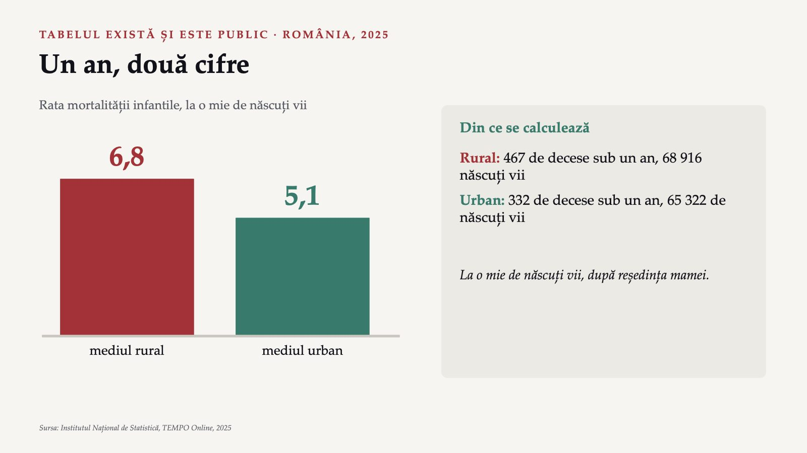
5 / 49Tabelul este public. Copilul din caz ar fi una dintre cele 467 de decese din mediul rural. Rămâne întrebarea: cum a ajuns decesul lui în acest tabel?
De unde a aflat Institutul Național de Statistică despre decesul sugarului din comună?
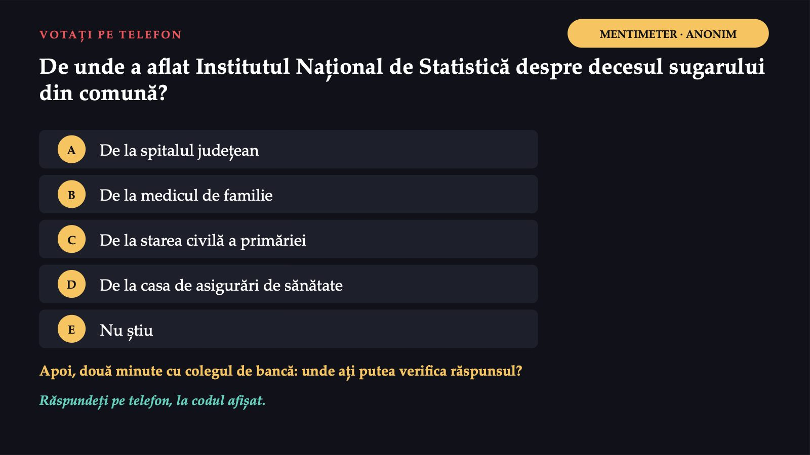
6 / 49Un vot anonim. Nu se poate ghici fără să cunoașteți procedura, și tocmai asta vrem să vedem.
Decesul intră în statistică prin primărie
 7 / 49
7 / 49Serviciul public comunitar de evidență a persoanelor din primărie completează buletinul statistic, care trece prin direcția județeană de statistică și ajunge la institut. De aici vine o regulă: ce nu se înregistrează nu se numără.
Calculați voi rata
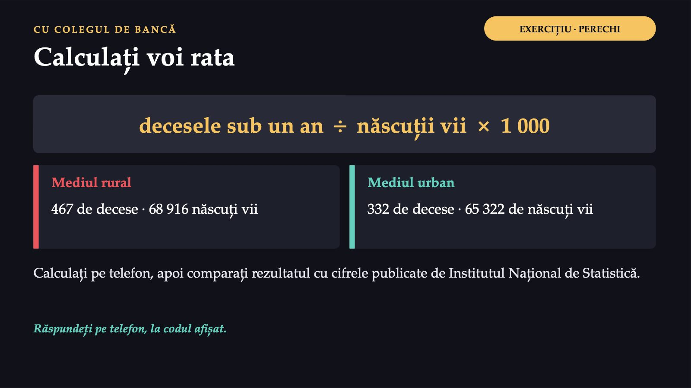
8 / 49Aveți toate cifrele pe ecran. Calculați întâi pentru mediul rural, apoi pentru cel urban.
Aproape șapte la sat, circa cinci la oraș
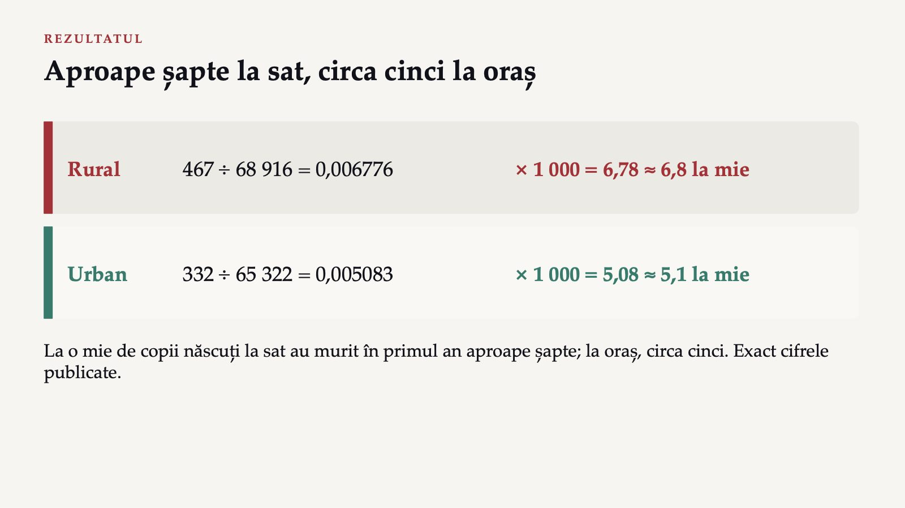
9 / 49Calculul nu are nimic misterios. Partea grea nu este împărțirea, ci numărătorul și numitorul: cine i-a numărat și dacă au fost numărați toți.
Sistemul informațional de sănătate publică
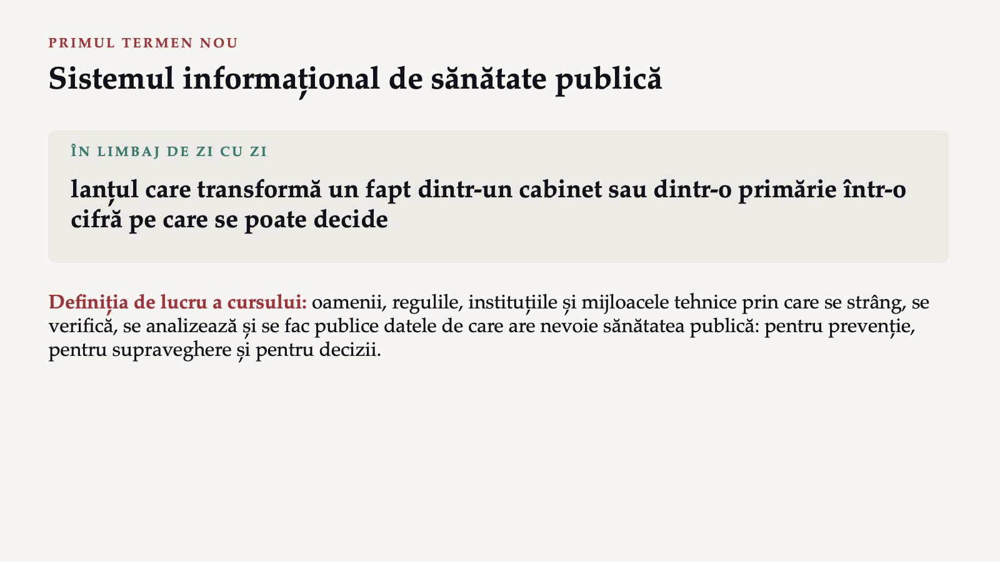
10 / 49Primul termen nou al zilei. Pe scurt: lanțul pe care tocmai l-ați urmărit, de la primărie la tabel.
Șase componente, pe cazul nostru
![OMS, 2008 · REȚEAUA HEALTH METRICS NETWORK Șase componente, pe cazul nostru Resursele legi, oameni, bani, calculatoare Indicatorii rata mortalității infantile Sursele de date înregistrarea nașterilor și a deceselor Gestionarea datelor strângerea, verificarea, păstrarea, transmiterea Produsele informaționale tabelele, rapoartele, tablourile de bord Diseminarea și utilizarea cine le citește și ce decide Pachetul actual al OMS, SCORE (2020), pornește de la acest cadru. O cifră pe care nu o folosește nimeni este doar o cheltuială.](diapozitive/C03/011.jpg) 11 / 49
11 / 49În 2008, Organizația Mondială a Sănătății a descris sistemul prin aceste șase componente. Pachetul ei actual, SCORE, grupează ce au de făcut țările în cinci intervenții. Ultima componentă, utilizarea, este cea mai ușor de uitat: rata din mediul rural devine utilă abia când cineva o pune lângă cea urbană și se întreabă de ce diferă.
Șase surse, șase feluri de a vedea
 12 / 49
12 / 49La fiecare întrebare de sănătate publică, primul pas este să alegeți sursa potrivită. Statisticile vitale sunt coloana vertebrală a sistemului: din ele se calculează mortalitatea și speranța de viață.
Câți studenți din orașul vostru fumează zilnic?
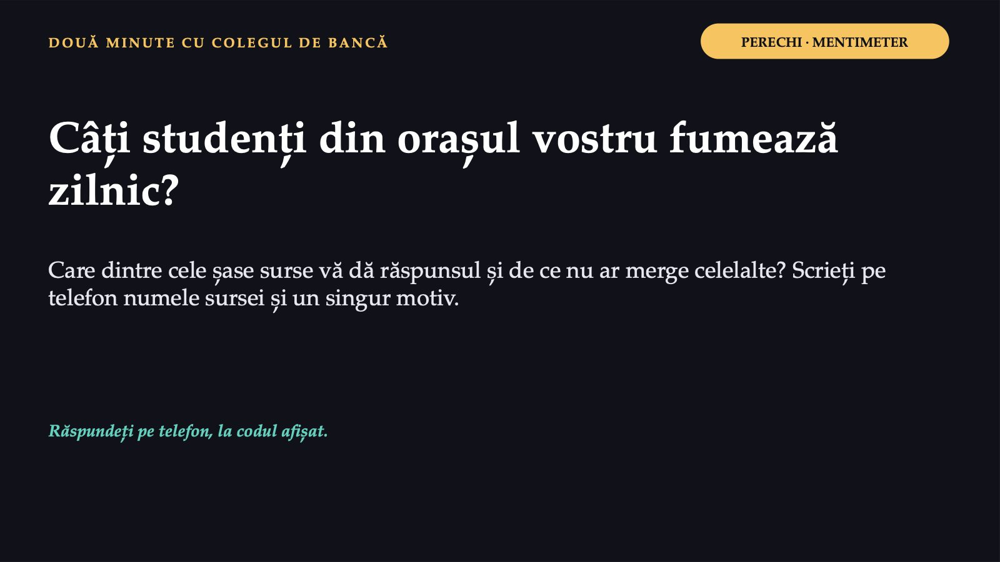
13 / 49Discutați cu colegul de bancă și scrieți pe telefon numele sursei și un motiv. Citim câteva răspunsuri împreună.
Întrebarea alege sursa, nu invers
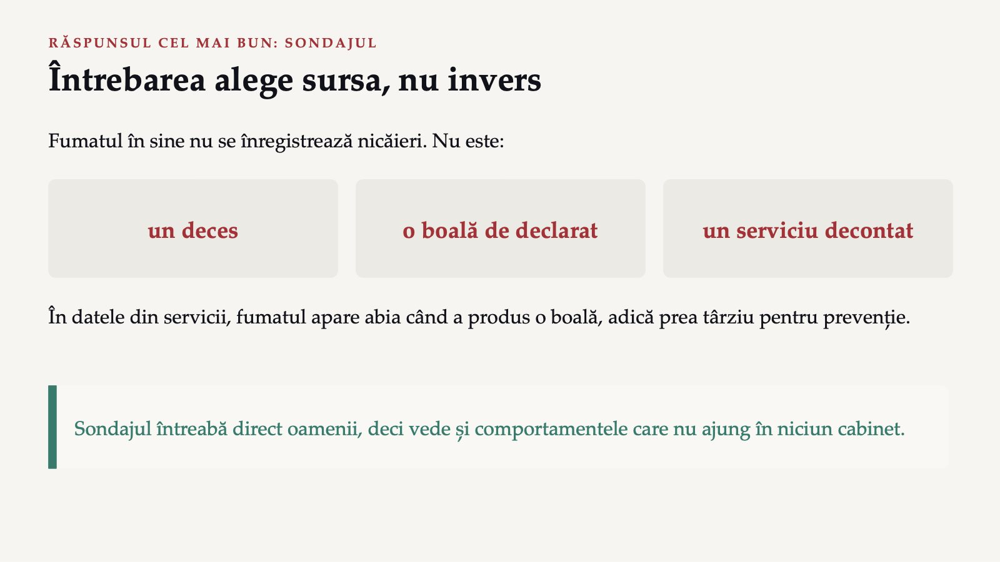
14 / 49Exercițiul arată regula generală: întrebarea alege sursa, nu invers.
Instituțiile pe care le veți întâlni des
![CINE FACE CE ÎN ROMÂNIA Instituțiile pe care le veți întâlni des Ministerul Sănătății autoritatea centrală în domeniul sănătății publice Direcțiile de sănătate publică serviciile ministerului în fiecare județ și în București Institutul Național de Sănătate Publică îndrumarea tehnică și metodologică a rețelei Institutul Național de Statistică statisticile vitale, între care rata mortalității infantile Casa Națională de Asigurări de Sănătate aplicațiile de raportare către SIUI; pagina despre dosarul electronic](diapozitive/C03/015.jpg) 15 / 49
15 / 49Casa Națională de Asigurări de Sănătate și dosarul electronic revin în a treia parte a cursului.
Un județ care a „vindecat” jumătate dintre sugari
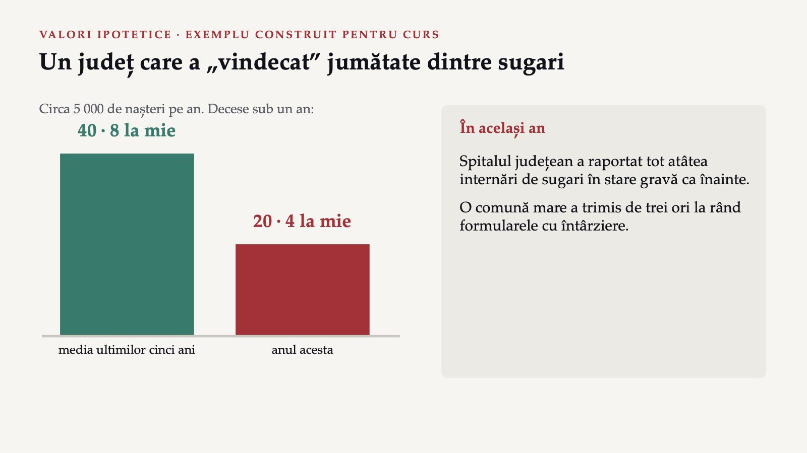
16 / 49Valorile sunt ipotetice. Rata pare să se fi înjumătățit într-un singur an. Înainte să vă bucurați, uitați-vă la cele două lucruri din dreapta.
Ce credeți despre scăderea din exemplu?
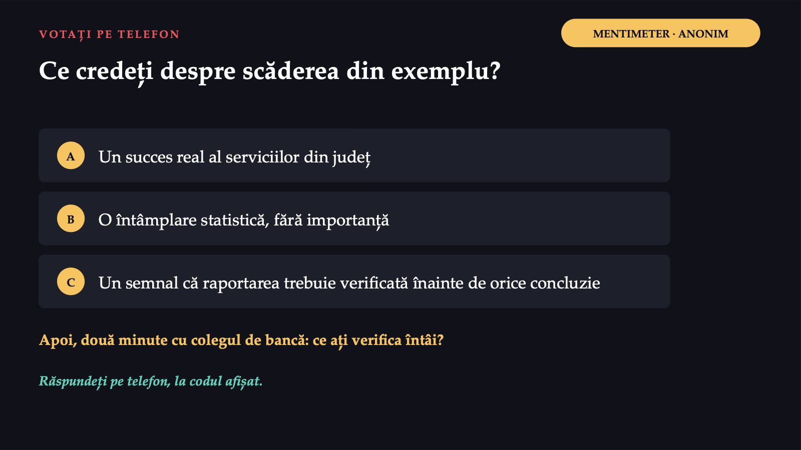
17 / 49Trei variante, un singur vot. Gândiți-vă la toate informațiile din exemplu, nu numai la cifra din raport.
Un semnal de verificat, nu un succes
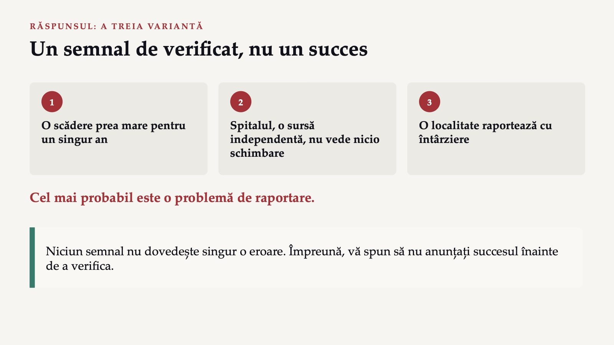
18 / 49Trei semnale merg în aceeași direcție. Niciunul nu dovedește singur o eroare.
Calitatea datelor
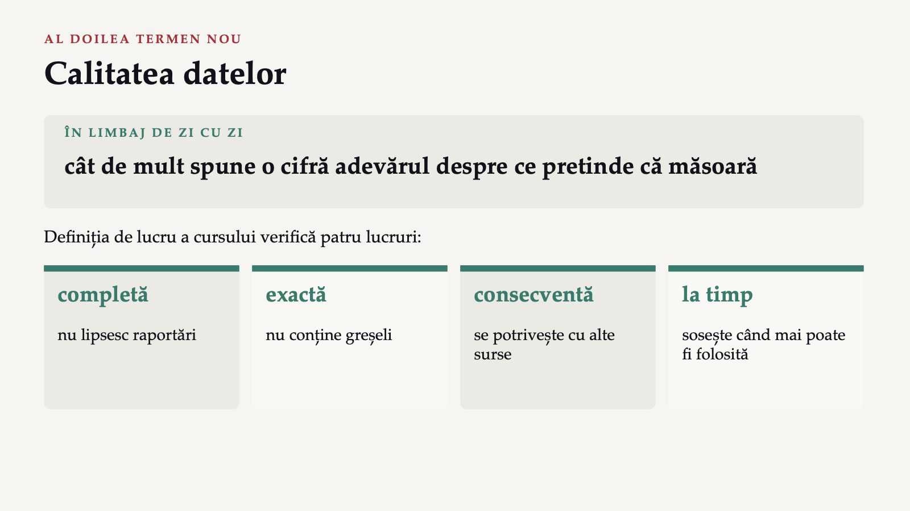
19 / 49Al doilea termen nou. Cele patru cuvinte sunt lista acestui curs, o definiție de lucru, ușor de ținut minte.
Cum verifică Organizația Mondială a Sănătății
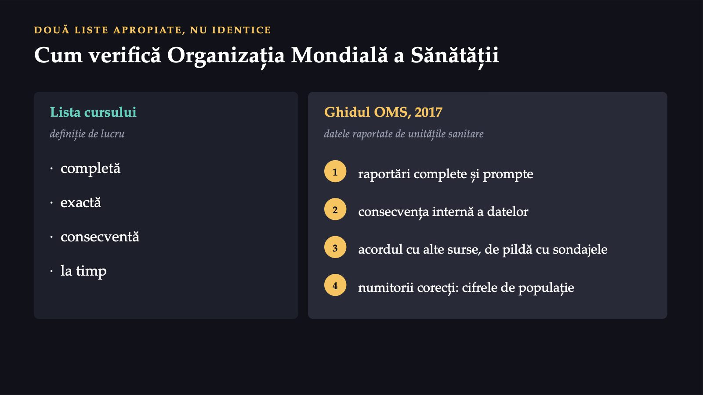
20 / 49Cele două liste seamănă, dar nu sunt aceeași listă. A patra dimensiune a ghidului este cea mai ușor de uitat: numitorul, adică cifra de populație din care se calculează rata.
Puneți exemplului din județ cele patru întrebări
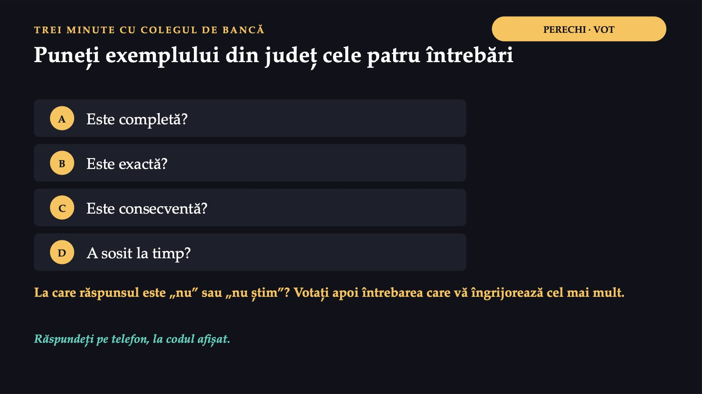
21 / 49Trei minute cu colegul de bancă. Aici nu există o variantă bună sau rea: vrem să vedem ce vă îngrijorează mai mult.
Ce ar găsi cine verifică cifra
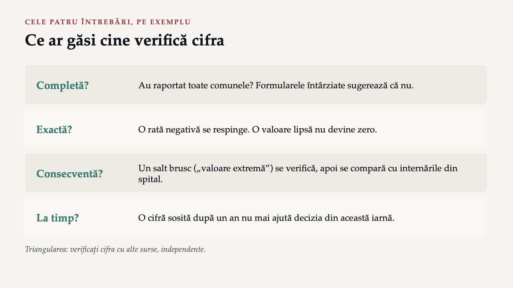
22 / 49O valoare extremă înseamnă, simplu, o cifră care sare mult față de anii dinainte. Nu o aruncați: o verificați înainte de a o folosi.
Regulile de numărare se pot schimba
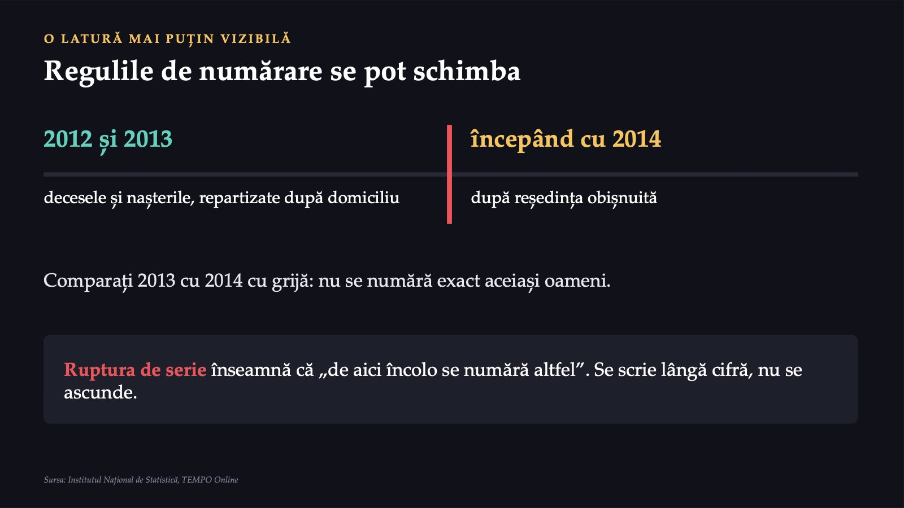
23 / 49Este exact observația pe care v-am rugat s-o citiți înainte de ședință, în tabelul din TEMPO Online.
Speranța de viață la naștere, 2024
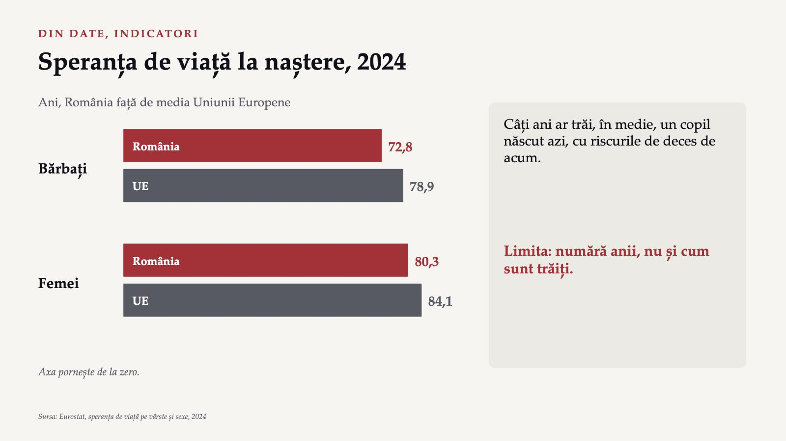
24 / 49Datele brute devin utile când sunt transformate în indicatori, adică în cifre comparabile între ani și între locuri. Rata mortalității infantile am calculat-o deja; al doilea indicator este speranța de viață.
HALE
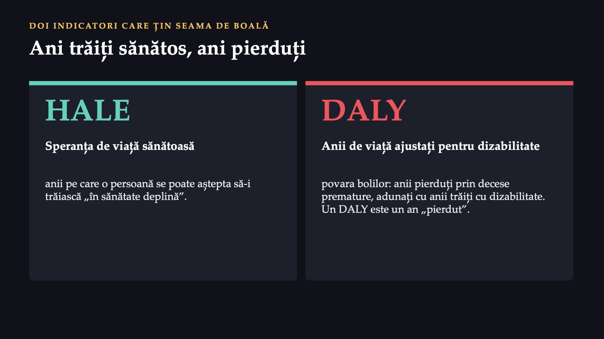
25 / 49Prima corectează limita speranței de viață; a doua măsoară povara bolilor. Pentru bolile care nu ucid repede mai sunt două cifre, incidența și prevalența, pe care le lucrați în detaliu la epidemiologie.
Două boli, aceeași povară?
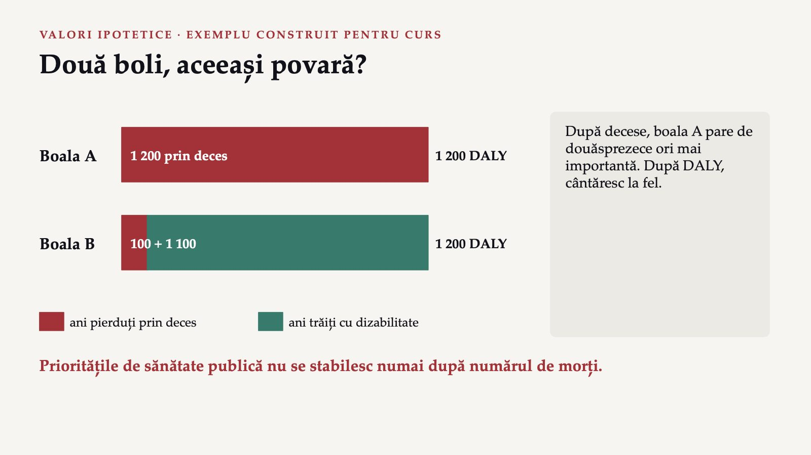
26 / 49Boala A ucide tineri; boala B ucide rar, dar ține mii de oameni cu dureri și limitări. Valorile sunt ipotetice.
Un primar vrea să știe câți ani trăiesc locuitorii fără boli care să le limiteze viața. Ce indicator îi recomandați?
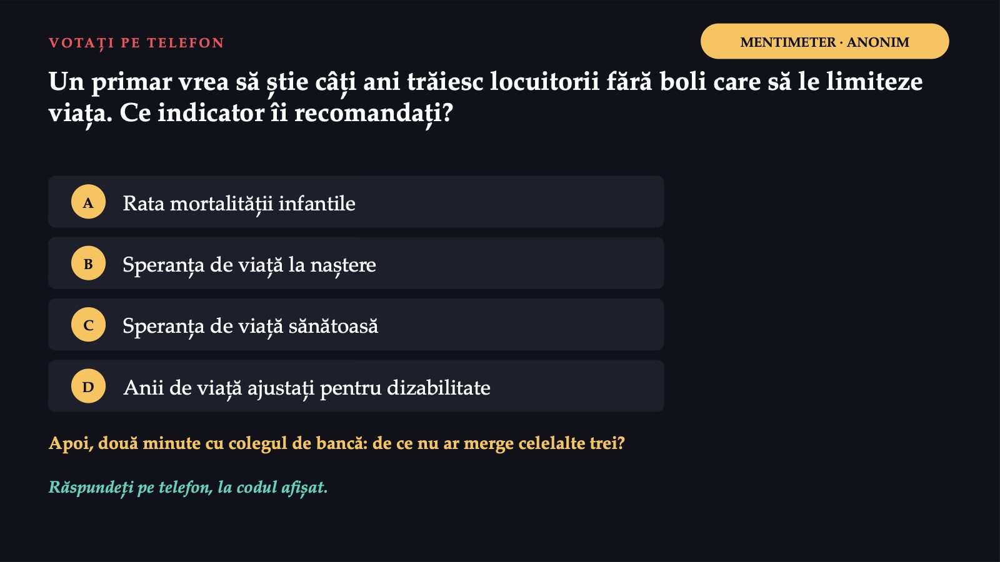
27 / 49Patru variante, un singur vot. Citiți cu atenție ce vrea să afle primarul.
Ce rămâne, nu ce s-a pierdut
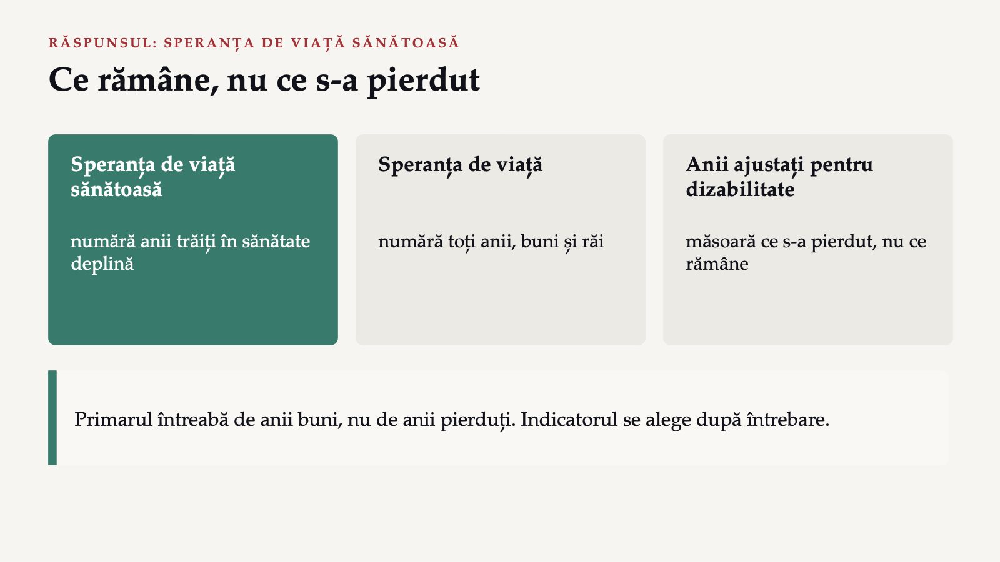
28 / 49Speranța de viață numără toți anii, buni și răi. Anii ajustați pentru dizabilitate măsoară ce s-a pierdut.
Inhalatorul rămas acasă
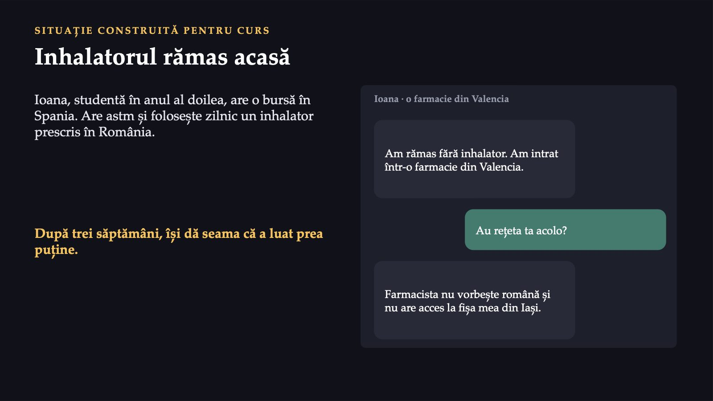
29 / 49Situația este construită pentru acest curs și nu descrie persoane reale. Ce ar putea face farmacista din Valencia?
Rețeta care trece granița
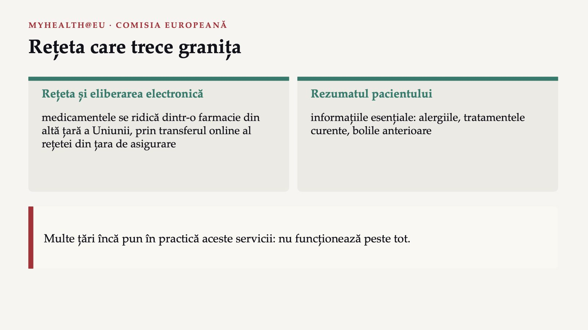
30 / 49Pentru astfel de situații, statele Uniunii Europene au construit serviciile MyHealth@EU. Aceasta este pagina pe care v-am rugat s-o citiți înainte de ședință.
Ce simțiți când aflați că datele din rețetele voastre pot fi folosite, fără nume, într-un studiu?
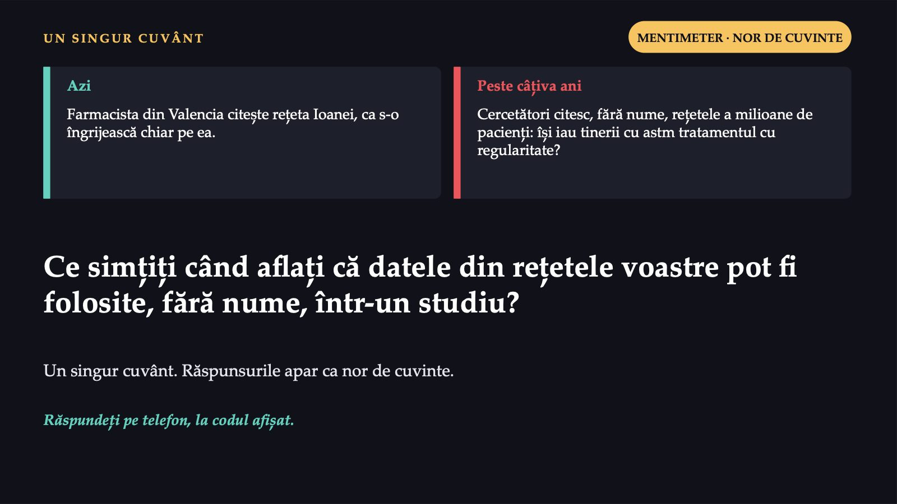
31 / 49Aceeași rețetă, două folosiri. Un singur cuvânt, fără să vă gândiți prea mult.
Utilizarea secundară a datelor
![AL TREILEA TERMEN NOU Utilizarea secundară a datelor ÎN LIMBAJ DE ZI CU ZI datele strânse ca să fiți îngrijiți, folosite în alt scop Utilizarea primară prelucrarea datelor electronice privind sănătatea pentru furnizarea de asistență medicală, inclusiv prescrierea și eliberarea medicamentelor Utilizarea secundară prelucrarea lor în scopurile stabilite de regulament, altele decât cele pentru care au fost colectate inițial: cercetare, statistici oficiale, politici Sursa: Regulamentul (UE) 2025/327, definițiile](diapozitive/C03/032.jpg) 32 / 49
32 / 49Al treilea termen nou. Distincția nu este doar o idee de curs: regulamentul european o scrie chiar în definițiile sale.
Primară sau secundară?
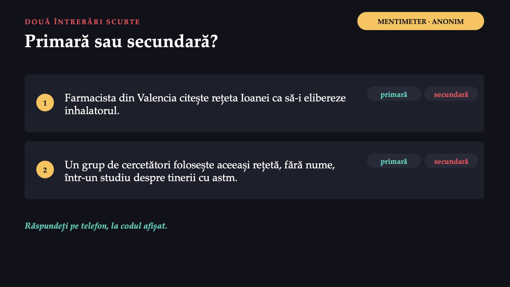
33 / 49Două întrebări scurte, cu aceleași două variante.
Întâi primară, apoi secundară
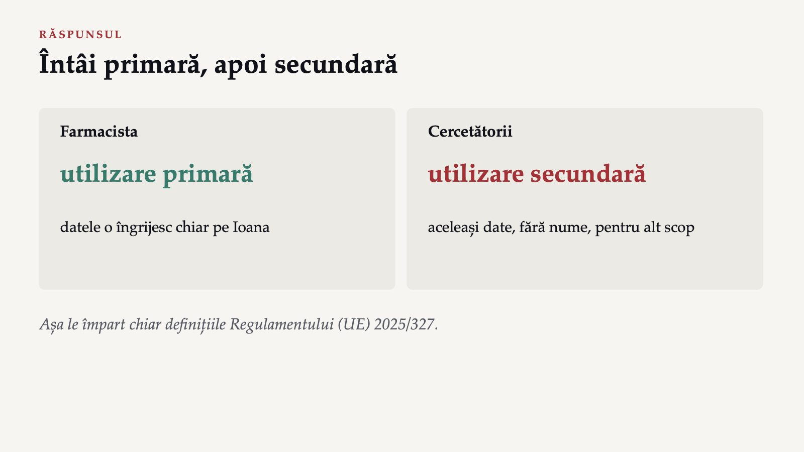
34 / 49Prima situație este utilizare primară, a doua utilizare secundară, după chiar definițiile regulamentului.
Principiile și o categorie specială
![REGULAMENTUL (UE) 2016/679 · GDPR Principiile și o categorie specială Articolul 5: principiile oricărei prelucrări „legalitate, echitate și transparență” „limitări legate de scop” „reducerea la minimum a datelor” „exactitate” „limitări legate de stocare” „integritate și confidențialitate” Datele privind sănătatea Interzisă ca regulă generală; permisă numai în situațiile enumerate expres, de pildă cu consimțământ explicit sau pentru interes public în sănătatea publică. Risc ridicat? Întâi o evaluare a impactului asupra protecției datelor.](diapozitive/C03/035.jpg) 35 / 49
35 / 49Două regulamente europene se citesc împreună. Primul este cel general. Pe scurt: datele se strâng pentru un scop clar, numai cât trebuie, corecte, păstrate cât este nevoie și protejate.
De când se aplică
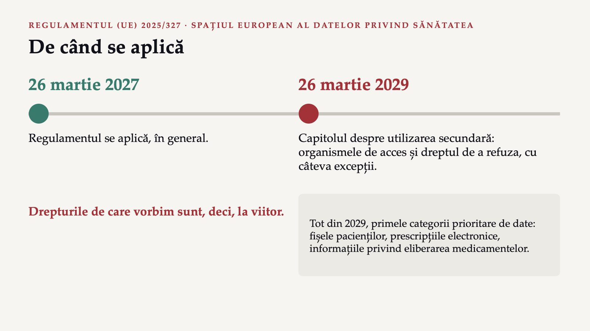
36 / 49Al doilea regulament adaugă reguli speciale pentru datele electronice de sănătate. Câteva prevederi vă privesc direct, dar nu de azi.
Cine decide și ce puteți refuza
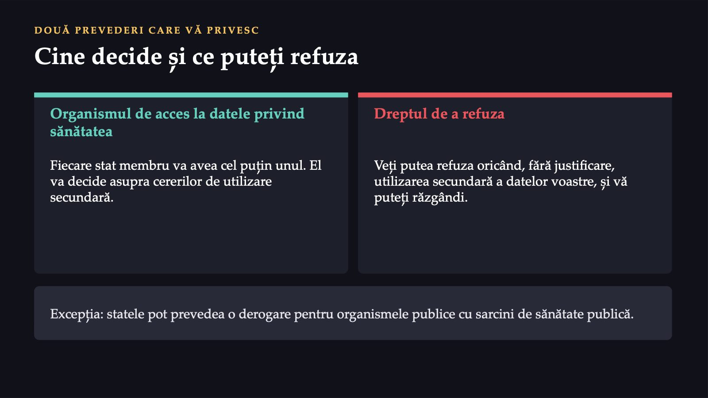
37 / 49Ambele prevederi se aplică din 2029. Organismul de acces este o instituție publică; în România nu am găsit încă actul de desemnare.
Ce s-a decontat și ce s-a întâmplat medical
 38 / 49
38 / 49Numai datele cu adevărat anonime, din care persoana nu mai poate fi identificată, ies din sfera regulamentului general.
„Datele din dosarul meu medical pot fi folosite, fără numele meu, de cercetători autorizați, pentru studii despre boala mea, iar eu voi avea dreptul să refuz.”
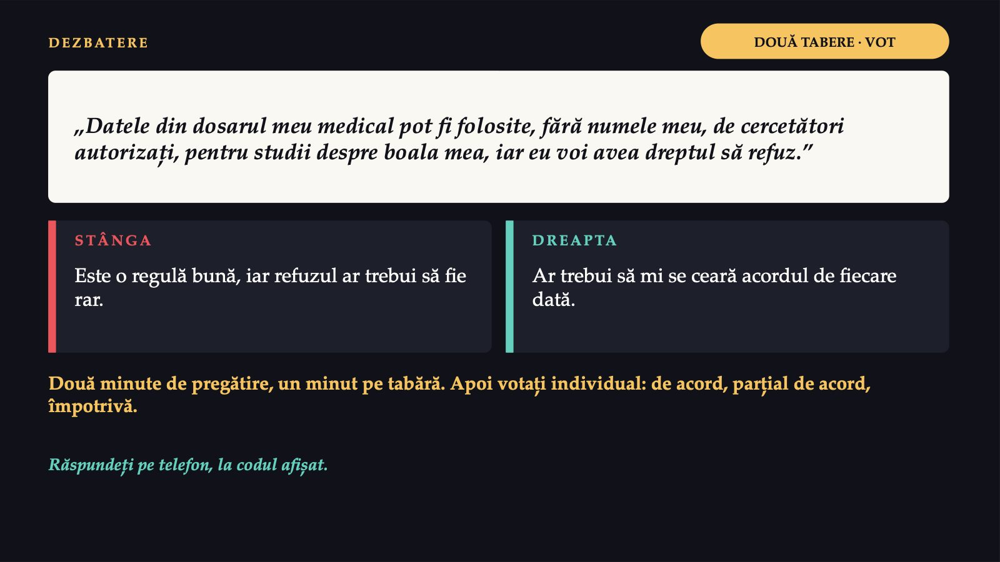
39 / 49Sala se împarte în două tabere. Fiecare tabără pregătește un singur argument.
Legiuitorul a ales o cale de mijloc
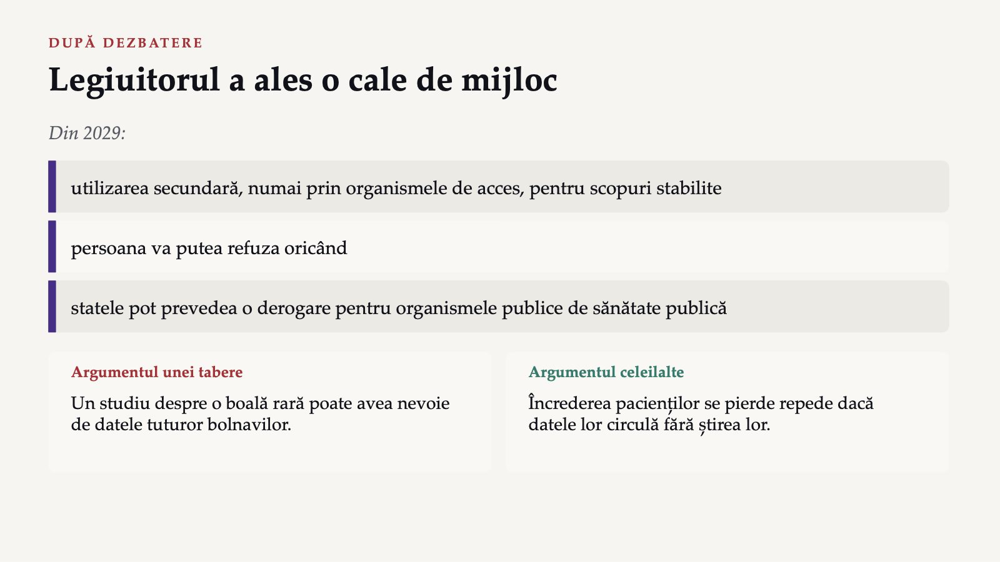
40 / 49Argumentele voastre sunt chiar cele dintre care au ales legiuitorii.
Ministerul de Externe confirmă moartea turistei românce atacată de un rechin în Egipt
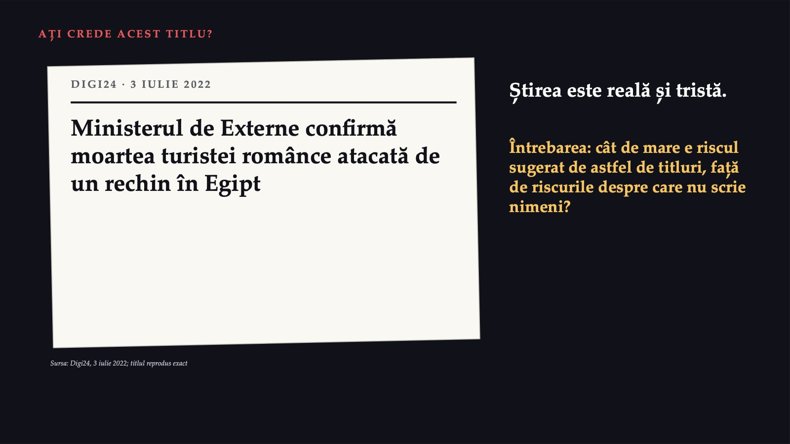
41 / 49La 3 iulie 2022, un site românesc de știri a dat acest titlu. Nu ne îndoim de știre. Ne întrebăm ce risc sugerează.
Câți oameni au murit anul trecut, în lume, după mușcături neprovocate de rechin?
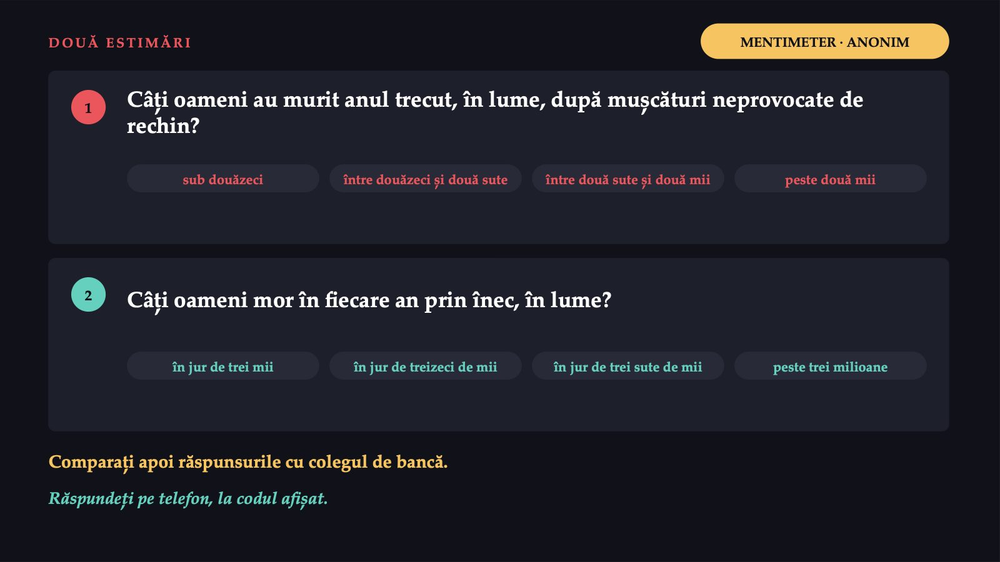
42 / 49Două estimări, fără să căutați pe internet. Contează prima impresie.
12
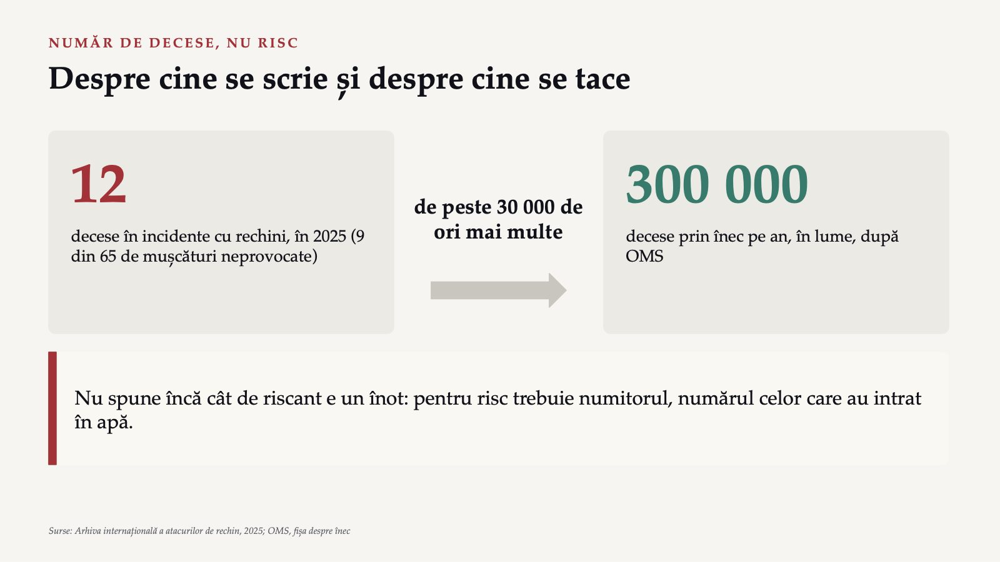
43 / 49Au murit mai puțin de douăzeci de oameni după mușcături de rechin și în jur de trei sute de mii prin înec. Comparația se face pe numere de decese, nu pe riscuri.
Trei scurtături mintale
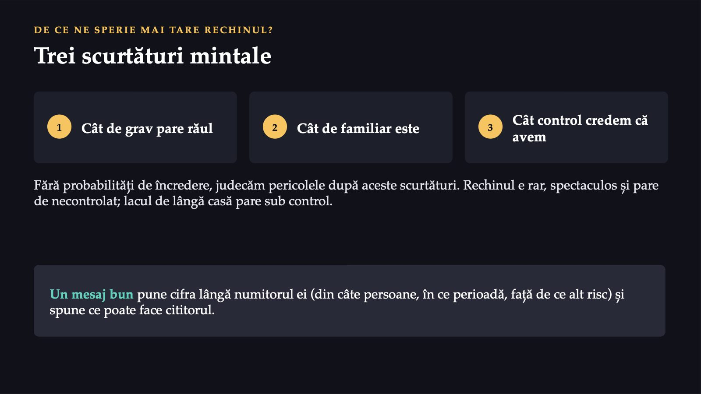
44 / 49Un mesaj bun nu sperie mai mult decât este nevoie și nu liniștește mai mult decât e cazul.
Acoperirea vaccinală în două orașe
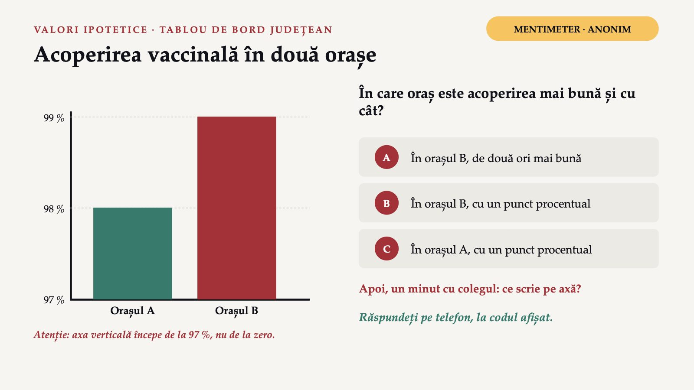
45 / 49Valorile sunt ipotetice. Uitați-vă întâi la grafic, apoi la axă.
Aceleași cifre, două axe
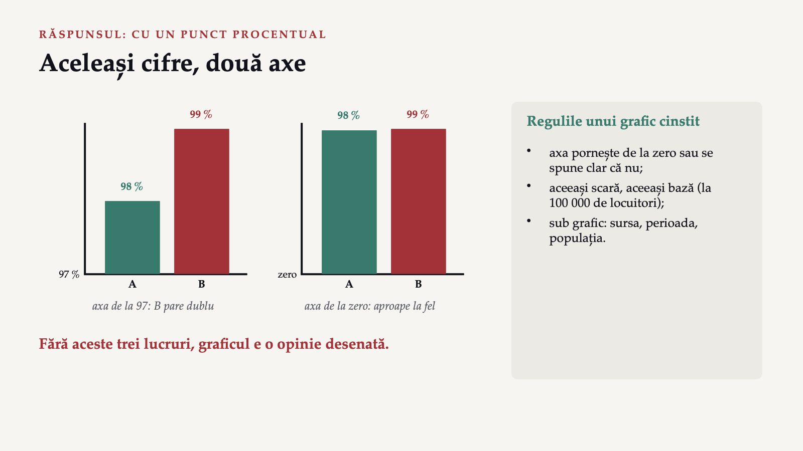
46 / 49Diferența reală este de un punct procentual, oricât de diferite ar părea barele.
Ce nu am putut confirma în surse
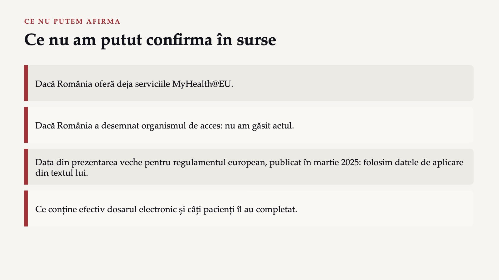
47 / 49Prezentarea veche a cursului conținea câteva afirmații pe care nu le-am putut confirma. De aceea nu apar în curs sau apar formulate cu prudență.
Patru întrebări pentru orice cifră
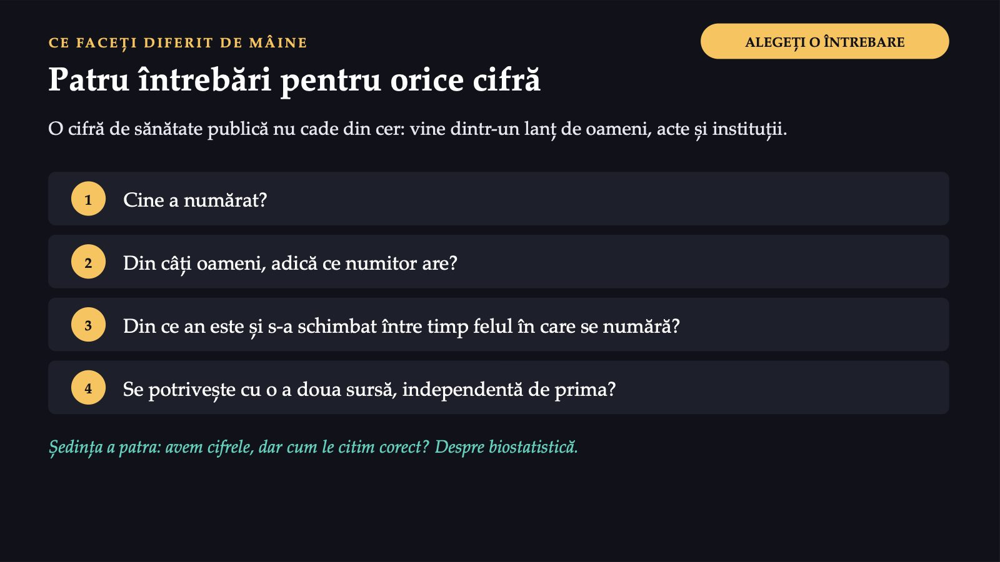
48 / 49Data viitoare când citiți o cifră despre sănătate, într-o știre sau într-o postare, puneți aceste patru întrebări. Dacă nu găsiți răspunsul la niciuna, cifra nu este încă o informație.
Trei întrebări pentru final
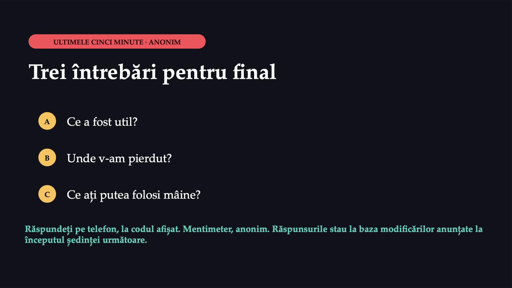
49 / 49Trei întrebări, anonim, pe Mentimeter. Data trecută nu a răspuns nimeni; fără răspunsurile voastre nu pot ști ce să schimb.
Săgeți sau spațiu: navigare · O: vedere de ansamblu · N: notele prezentatorului · F: ecran complet · Esc: închidere